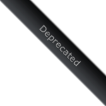

class method Event.element
Event.element(event) → Element-
event(Event) – An Event object
Returns the DOM element on which the event occurred. This method
is deprecated, use Event.findElement instead.
Example
Here's a simple bit of code which hides any paragraph when directly clicked.
document.observe('click', function(event) {
var element = Event.element(event);
if ('P' == element.tagName)
element.hide();
});
See also
There is a subtle distinction between this function and
Event.findElement.
Note for Prototype 1.5.0
Note that prior to version 1.5.1, if the browser does not support
native DOM extensions (see the Element section for further details),
the element returned by Event.element might very well
not be extended. If you intend to use methods from Element.Methods
on it, you need to wrap the call in the $ function like so:
document.observe('click', function(event) {
var element = $(Event.element(event));
// ...
});
This method can be called either as an instance method or as a generic method. If calling as a generic, pass the instance in as the first argument.